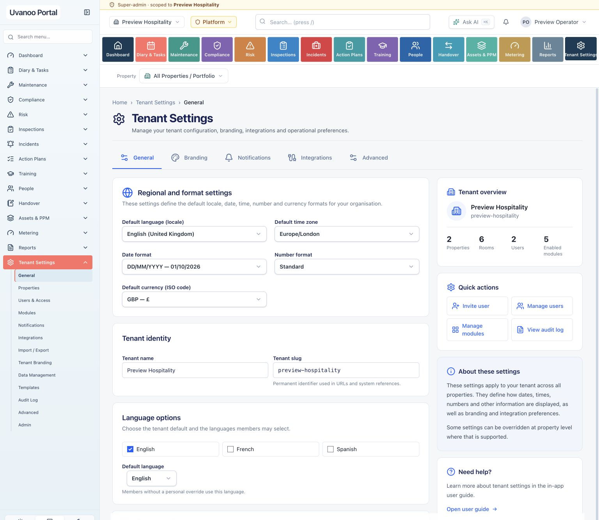
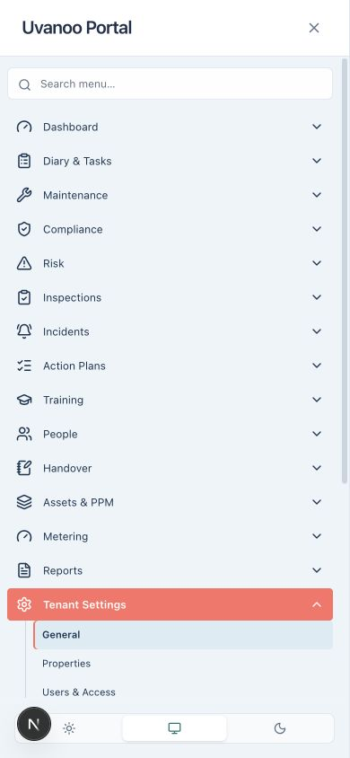
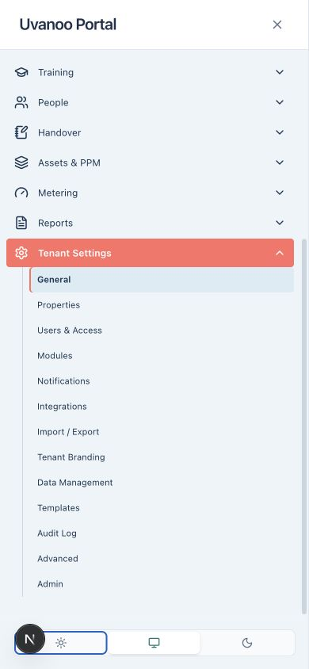
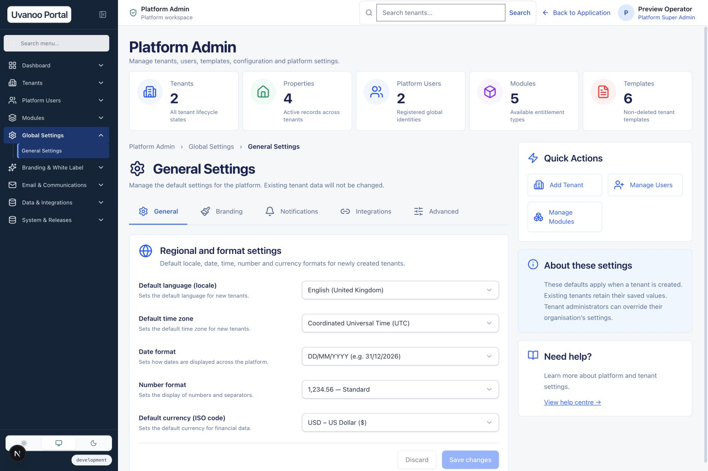
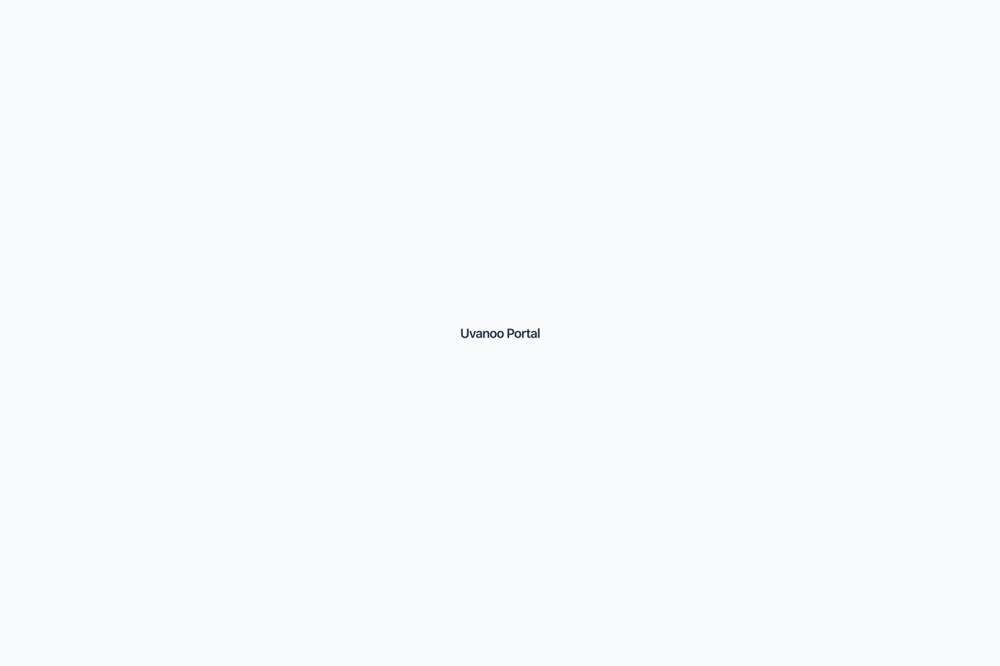
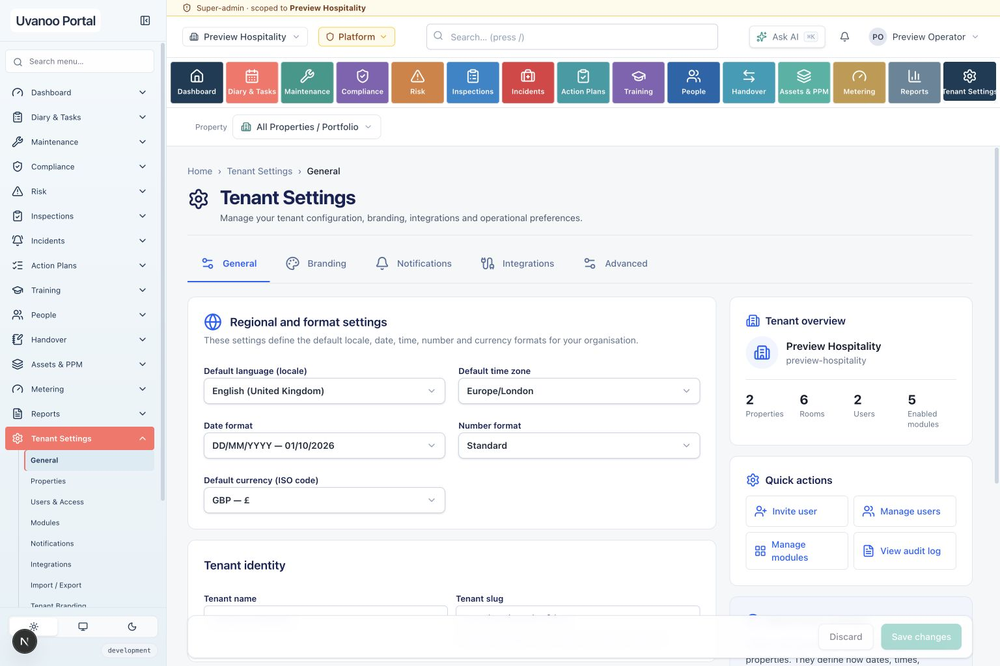
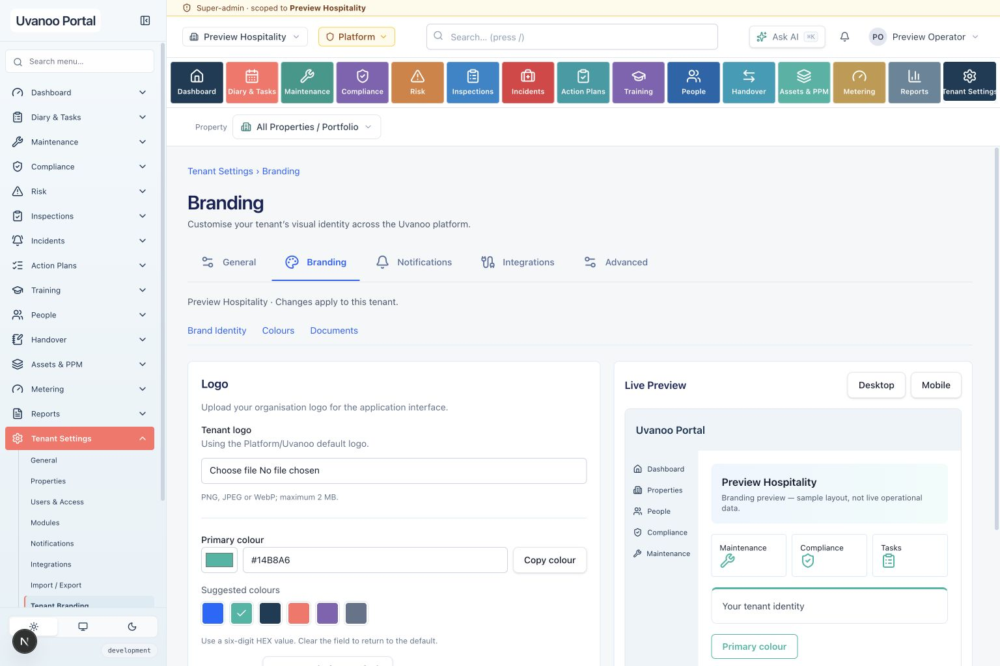
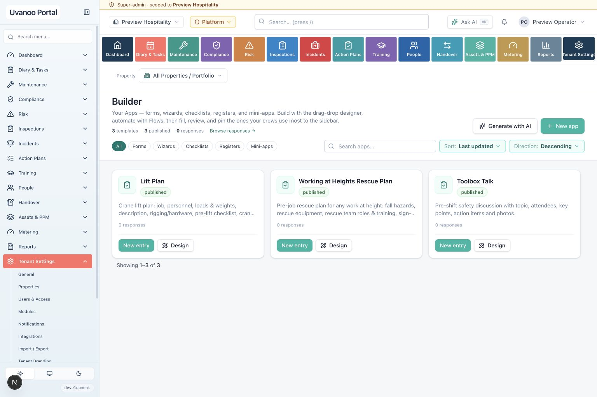
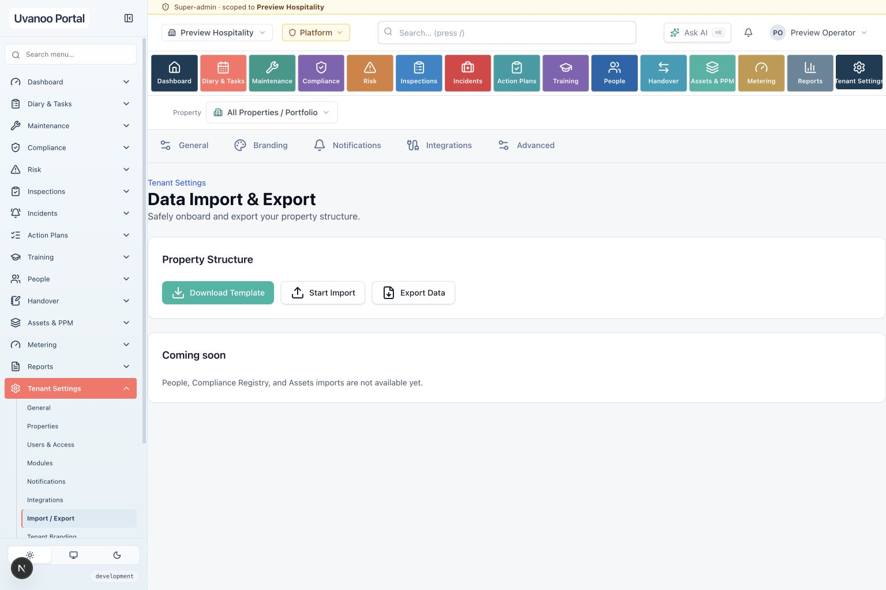
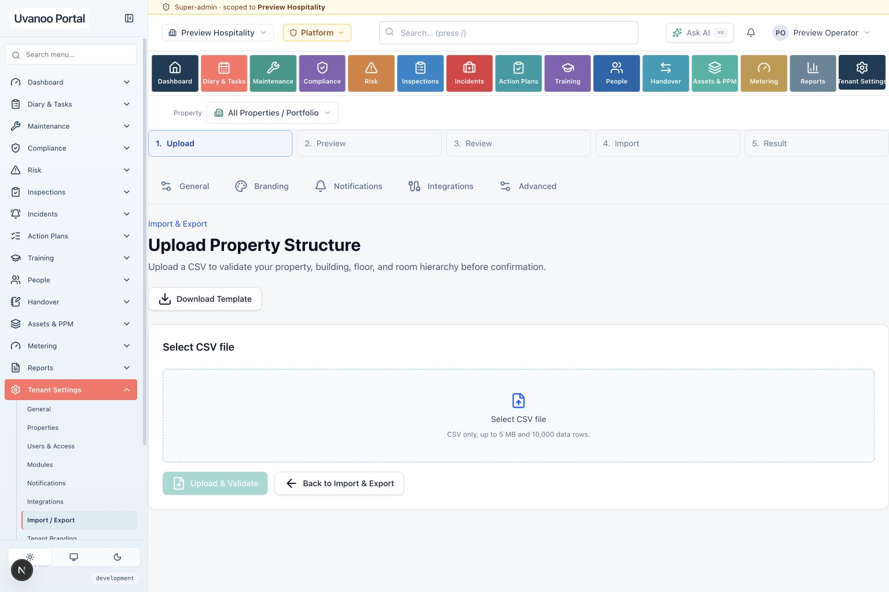

Uvanoo V1.4 · Visual Batch 01
Real application preview and original-reference comparison · 9 October 2026
Sidebar correction implemented · visual approval pending
The duplicate lower navigation was produced by the approved-navigation adapter appending its unconsumed legacy category groups. The adapter now normalizes the same permission-filtered destinations into one approved module tree. This is a source correction, not CSS suppression.
Every rendered application module is a disclosure. Existing hubs, custom links and pinned forms remain reachable beneath their owning module. The light sidebar, navy icons, coral active parent, indented children, submenu guide and search are retained. Reports remains separate from Reporting; Approvals is not mapped to Manager Sign-off.
This package does not claim that every original screen is fully implemented or visually accepted. Backend gaps and remaining design differences are listed below.
Open isolated application preview · Open Platform General Settings
Baseline and isolation
| Repository / branch | Satho82/beaconhs · feature/uvanoo-v1.4-batch01-visual-final |
|---|---|
| Validated product | 0a4a04ca13758b68068f9483a3c0816b741478d8 |
| Verified remote baseline / worktree HEAD | c6cb678a8b603c57783fe93f43f7758978c10862 |
| Baseline cloud validation | 37930532626 — success. This package accompanies the isolated visual checkpoint commit. No new visual CI run, merge or deployment. The checkpoint SHA is the containing Git commit. |
| Preview database | Task-only PostgreSQL 16 container uvanoo-visual-b01-20261009-a1202e; network none; TCP disabled; tmpfs data; private Unix socket tunneled to loopback 65459. Synthetic data only. No shared persistent volumes or existing Docker services changed. |
| Security preservation | Migration 0057 and People/Action/Incident policy and regression files unchanged from baseline. No security investigation restarted. |
| New migration | 0058 adds platform regional-default configuration only. All 58 migrations installed; repeat installation has zero pending migrations. Existing tenants retain their regional settings. |
Validation evidence
Final full-suite/build results are recorded in validation-results.json. Individual logs below retain the exact output.
- 28 focused navigation, entitlement and registry tests passed, including one-tree rendering, no legacy category headings, destination preservation, approved ordering and permission filtering.
- Desktop 1536px, tablet 768px and mobile 390px exercised. Expanded full sidebar and mobile top/bottom captured. Mobile Escape closes the drawer and returns focus. Search retains matching ancestors and children.
- Real tenant General and Branding save/discard/reload checks passed. Branding changes remained confined to the selected synthetic tenant.
- Platform module search and tenant entitlement pages verified against the existing five-capability catalogue. Tenant-count query regression fixed and tested.
- Authenticated tenant/platform boundary smoke check: exact denial redirects and absence of protected platform content; authorized tenant settings render.
- Regional default inheritance: newly created synthetic tenant inherits platform defaults; both existing tenants retain London/GBP settings.
- Migration idempotency · Formatting · Typecheck · Lint · Knip · Tests · Build
G04 · Unified application navigation
.png)


Mobile drawer: top and bottom


G01 / G02 · Platform Admin and General Settings


 (1).png)

Additional actual screens: Tenants · Tenant overview · Platform users · Modules · Tenant entitlements.


G03 · Approved hierarchy
.png)
All approved module groups remain in the source inventory. Unsupported destinations remain documented and are not exposed as dead links. The actual visible tree is the permitted, supported subset. Diary Manager Sign-off is property-scoped and independently entitlement-gated; it does not implement Approvals.
G08 · Tenant General Settings




G09 · Tenant Branding


G05 · Templates: existing capability, not the approved master catalogue


G06 / G07 · Import / Export contract preserved




Outstanding visual acceptance and functional gaps
- Antonio’s visual approval remains pending. Screenshots are real and are not a pixel-perfect acceptance claim.
- The standalone approved house/target logo asset is not available in the repository or recovered references. Current configured text branding remains; no replacement logo was generated.
- Exact typography, header proportions, content density and some icon shapes still differ from the original artwork. The full hierarchy is preserved, but only supported and authorized destinations are rendered.
- Daily Hotel, Reporting and the separate Approvals module are deferred by the existing implementation ledger. Reports remains a working independent module. No Approvals placeholder was created.
- Platform Admin does not yet have every illustrated administration module, master-template catalogue or all notification/integration configuration workflows. Tabs route to supported existing surfaces, whose narrower capabilities must not be mistaken for full implementation.
- Tenant secondary colour, tenant login/email branding, Italian translations and G05 master-template adoption are unsupported. Existing logo uploads accept PNG/JPEG/WebP, not SVG. Existing import contracts differ from G06/G07.
- No Redis service was created for this preview. Background email/notification delivery, real external integrations, production readiness, live uploads and operational workflows outside this batch were not exercised.
The preview database and loopback application are retained solely for local review. Nothing has been deployed to DEV, staging or production.